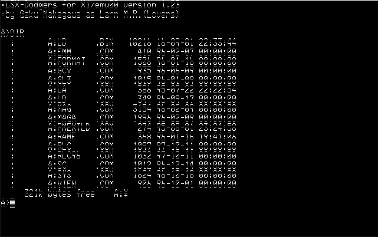
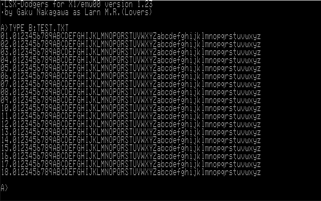
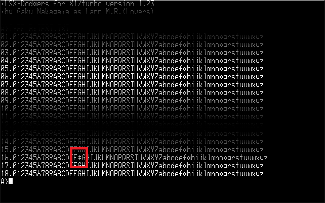

各種X1エミュレータ用LSX-Dodgers 起動ディスクイメージ
LSX-Dodgers 起動ディスクイメージ
D88形式のLSX-Dodgersの起動ディスクイメージです。
LSX-Dodgersと各種外部コマンドが入っています。
(LSX-Dodgers for X1/turbo version 1.23)
LSX-Dodgers 起動ディスクイメージ(強制ノーマルX1版)
上記の起動ディスクイメージでは各種X1turboエミュレータでは微妙に動作がおかしいので、X1/turboの判定を強制的にノーマルX1にしたもの。
(LSX-Dodgers for X1/emu00 version 1.23)

不具合確認用ディスク
D88形式の仮想ディスクイメージです。上記のLSX-Dodgersでのテストテキストファイルが入っています。
ドライブ0にLSX-Dodgersの起動ディスク、ドライブ1に不具合確認用ディスクをセットして起動し、TYPE B:TEST.TXTを実行します。
正常（ノンターボ版）

異常（通常版）

1024バイト目でずれています。多分、多くのX1turboエミュレータではDMA辺りで不具合があるのではないかと思われます。
不具合確認用テキスト